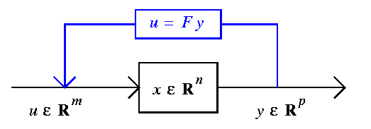

Suppose now that we wish to control the system of the
previous section with constant linear output
feedback y = Fu:

The behaviour of the closed system
dx/dt = (A + BFC)x
is determined by the roots of the characteristic polynomial
f(s) = det(sIn - A - BFC).
This is the forward problem:
Given a system, represented as matrices
A,B,C, and a feedback law F, the system evolves according to
the behaviour encoded in its characteristic polynomial f(s).
The inverse problem is the
Pole Placement Problem:
Given a linear system represented by matrices A,B,C, and a desired
behaviour f(s), which feedback laws F satisfy
f(s) = det(sIn - A - BFC)?